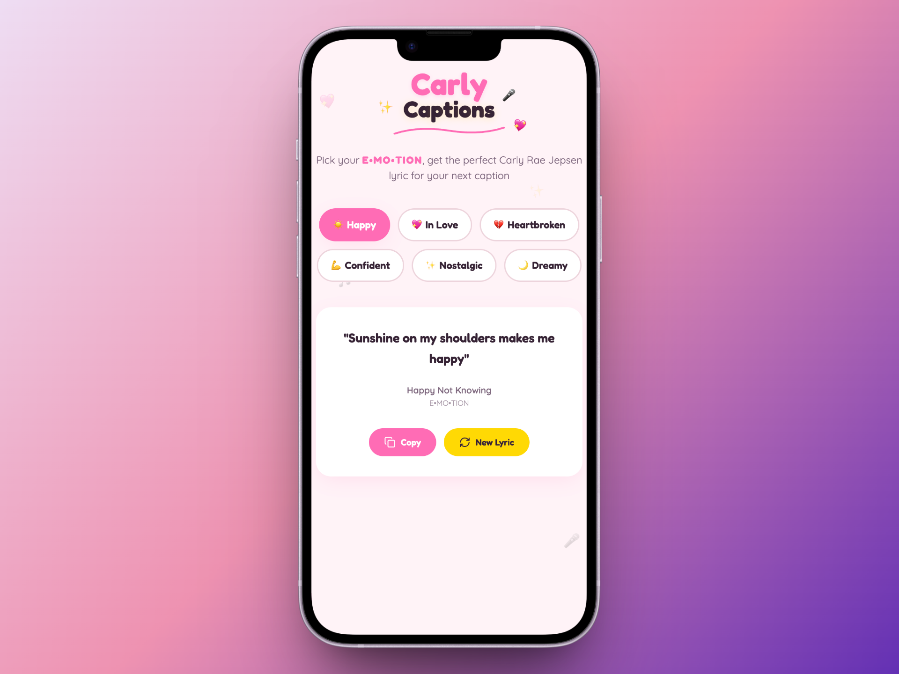

Carly Captions
A playful lyric generator for the most dedicated pop fandom
CRJ Has a Lyric for That
Most of us know the feeling: you have a moment, you need a caption, and somehow no lyric feels quite right. Carly Captions started as an experiment in "vibe-coding" with Lovable, prompting an AI to build a mood-to-lyric matcher across her entire discography. The result maps 12 curated emotional states (Giddy, Heartbroken, Confident, and nine more) to lyric snippets that fit the moment.
Key Features
- Mood-to-Lyric Mapping: Click an emotion, get an instant lyric match from songs spanning Kiss to The Loveliest Time
- Smart Randomization: Regenerate within the same mood without repeats; every caption feels fresh
- One-Click Copy & Share: Designed for the Instagram/TikTok workflow: grab, paste, post
- Responsive, Motion-Rich UI: Spring physics animations, staggered letter reveals, and floating emoji accents that mirror Carly's sparkly aesthetic
Technical Highlights
Built as a zero-backend React app with TypeScript and Tailwind CSS. The matching engine uses a curated lookup table (emotion → lyric[]) with Fisher-Yates shuffling for unbiased randomness. UI motion handled via Framer Motion with custom spring configs. Deployed on Lovable with instant preview-to-production pipelines.
Design Philosophy
The visual language borrows from Carly's own album art: hot pink accents, rounded pill shapes, and a custom animated logo that bounces with personality. Every interaction rewards the user: hover states tilt letters, confetti bursts on copy, and the E•MO•TION branding is treated as a marquee element.

Fun to Build, Fun to Use
A shareable micro-app that turns a niche fandom moment into a quick, delightful utility. It’s the kind of project you send to a fellow stan and they immediately get it.
Check it out